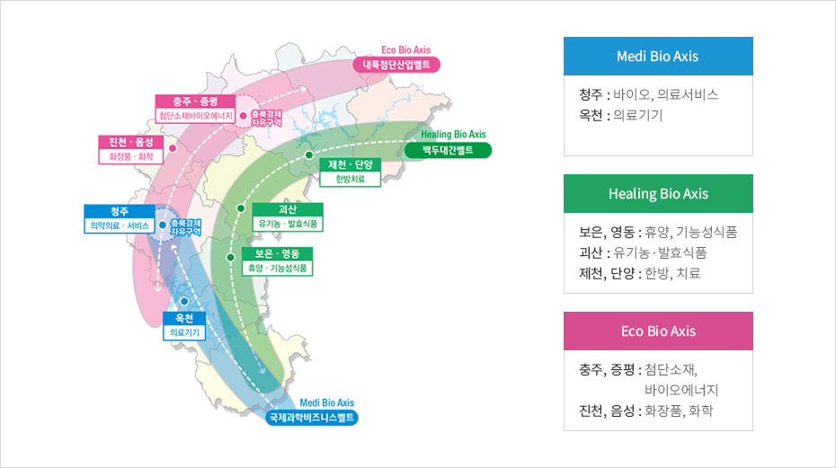

바이오산업
- Home
- 주요산업
- 바이오산업
3 · 3 · 7 바이오밸리 프로젝트
충북은 세계 3대 바이오밸리 도약을 위해 3대 발전축, 7대 거점지구를 적극 육성


- Medi Bio Axis
- 청주 : 바이오, 의료서비스
- 옥천 : 의료기기
- Healing Bio Axis
- 보은, 영동 : 휴양, 기능성식품
- 괴산 : 유기농·발효식품
- 제천, 단양 : 한방, 치료
- Eco Bio Axis
- 충주, 증평 : 첨단소재, 바이오에너지
- 진천, 음성 : 화장품, 화학